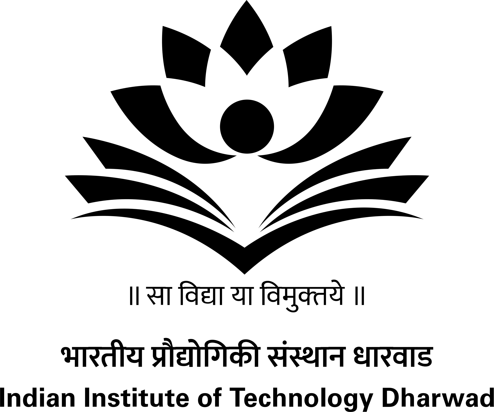

|
 |
 |
 |  |
 |

Financial Sponsors

Technical Co-Sponsors


Getting to IIT Bombay
The following information is reproduced from the webpage of the EE department at IIT Bombay.
From the Mumbai Airport
Mumbai's airport is called Chhatrapati Shivaji International Airport (CSIA). There are two terminals namely Domestic and International. You can take the following to reach IIT Bombay from the airport: (i) taxi (cab), (ii) prepaid taxi if you wish to absolutely avoid a tout), and (iii) auto-rickshaw. IIT Bombay is situated in a suburb named Powai. The cabs and the auto-rickshaw operate all the time. Taxi or prepaid taxi can be booked at the airport. Auto-rickshaws do not have any booking. All these ply by the meter.
From various railway stations
There are five railway stations from which you can take an auto-rickshaw (if available) or a taxi (cab). From far-off stations, there is also local train connectivity; however, they might be exceptionally crowded during office hours. The nearest station to IIT Bombay is Kanjurmarg (West) or Vikhroli (West). From the station, taxi or auto-rickshaws can be hired for IIT Bombay.
The five railway stations are:
- Chhatrapati Shivaji Terminus Mumbai (CSTM)
- Dadar Terminus
- Lokmanya Tilak Terminus Kurla (LTT)
- Mumbai Central Terminus
- Bandra Terminus
The buses that arrive to IIT Bombay are:
- BEST buses from Kanjurmarg West to IIT Powai Main Gate: 396ltd, 403ltd, 425ltd, 409ltd, 398ltd, 496ltd, 346ltd, 425, 424, 422, 461ltd, 307, 459ltd, 460ltd
- BEST bus from Bandra Terminus to IIT Powai Main Gate: 422
- BEST buses from Andheri (Agarkar Chowk) to IIT Powai Main Gate: 496ltd, 445ltd, 392, 185, 336, AS-522 (air-conditioned)
At the IIT gate
You will be required to present an identification document with your photograph (passport / identity card issued by your organization / driving license etc.) at the Main Gate, while entering the campus. If you are carrying a laptop, you need to obtain a temporary gate pass as part of IIT Bombay security regulations. Security regulations at IIT Bombay require every visitor to obtain such a temporary gate pass every time he/she brings a laptop into the campus.
Venue and local information
Venue and local information will be announced in due course of time.
| Technical Co-sponsors | ||
| |